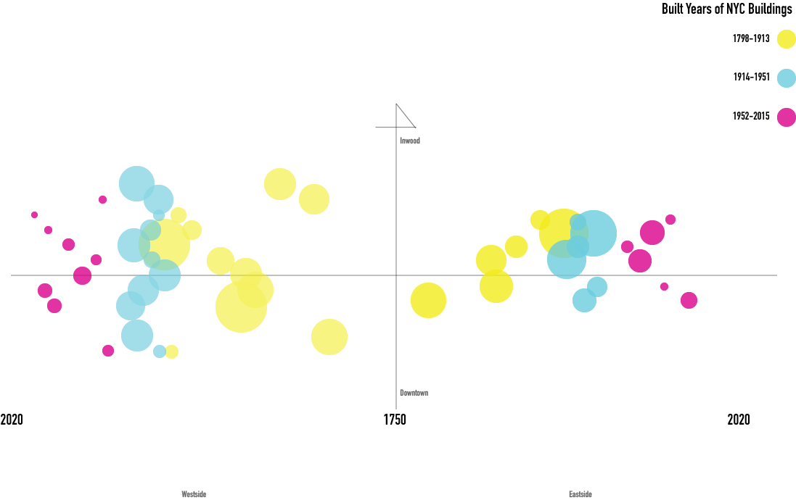

The main intentions for making this graphic are to show spatial data not on
a map while keeping some spatial aspects and to show clusters.
My design decision is to have less words on the graph to keep the visual clean.
I also limited the use of color to 3. The colors of bubbles are decided on k-mean cluster
analysis. The bubble shows raw counts of the number of the buildings, and
a large bubble means that the more buildings built during
a given interval. What I think is interesting about this graph is that it shows
the growth of buildings in midtown for both West and East side. However, as a general
trend, Westside has a more North-South spread out developing pattern.
I'm not sure if this design decision is the best or not. It might be a bit abstract
and not very intuitive. But, I put a conscious effort to make this graph readable
without compromising too much of its design aspect.